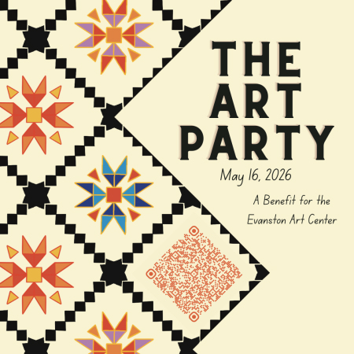

Evanston Art Center’s 37th Annual Art Party
The Evanston Art Center (EAC), a non-profit arts organization, proudly presents its 37th Annual The Art Party, taking place on Saturday, May 16, 2026, at 6:00 pm at 1717 Central Street.
This yearly tradition includes silent and live auctions that raise money to support EAC’s mission: fostering the appreciation and expression of the arts among diverse audiences. Last year, over 230 attendees from the Chicago and North Shore areas helped to raise $100,000 for outreach, scholarship, and exhibition programs.
For almost 100 years, EAC has provided public outreach programs, exhibitions, and resources for art education. The Spring Benefit is an integral part of the Evanston Art Center’s success.
To purchase tickets, go to our One Cause page. Individual tickets cost $275. The price for all tickets includes a wonderful dinner by J & L Catering and the opportunity to bid on a selection of items in our silent and live auctions. Items include a vibrant range of artwork, hotel stays, restaurant certificates, weekend getaways, jewelry and accessories, and more.
This event will be a lovely evening out and an opportunity to support EAC’s important mission. Even if you can’t attend, you can still participate in the online auction.
The Evanston Art Center is dedicated to fostering the appreciation and expression of the arts among diverse audiences by offering extensive and innovative instruction in broad areas of artistic endeavor through classes, exhibitions, interactive arts activities, and community outreach.